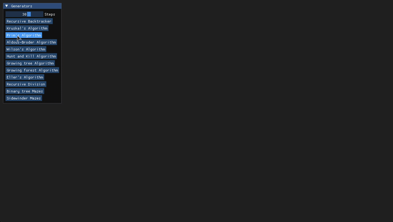
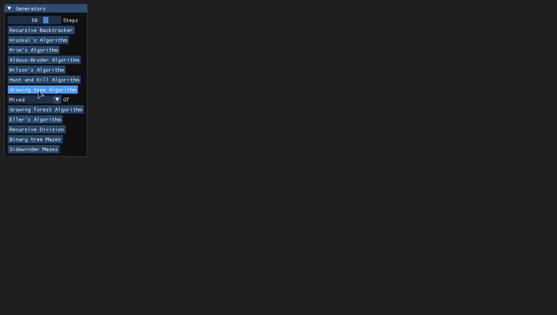
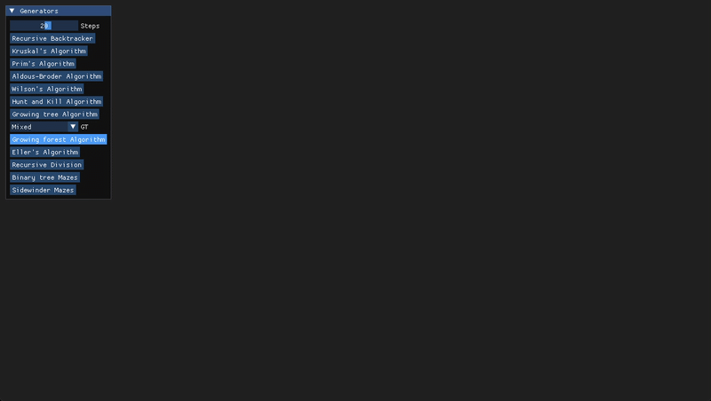
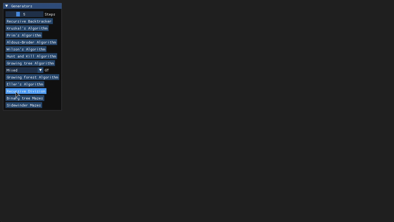
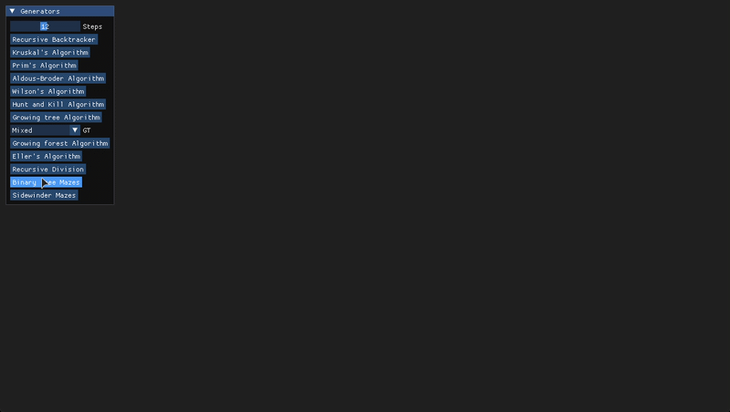

All-in-One Maze Generation
Every maze generation algorithm from the series in one place, with its animation and pseudocode
Recursive Backtracker #
carve(room):
mark room as PATH
for each direction, in random order:
neighbour = room + 2 * direction
if neighbour is in bounds and still a WALL:
knock out the wall between room and neighbour
carve(neighbour)
start: carve(a random room)Kruskal’s Algorithm #

for each room: parent[room] = room
walls = every wall between two rooms
shuffle(walls)
for each wall in walls:
a, b = the two rooms on either side of wall
if find(a) != find(b):
knock out the wall
join(a, b)Prim’s Algorithm #

carve(start room); add_walls(start room)
while frontier is not empty:
wall = remove a random wall from frontier
a, b = the two rooms on either side of wall
if exactly one of them is not in the maze yet:
knock out the wall
open that room
add_walls(that room)
add_walls(room):
for each direction:
wall = room + direction
far = room + 2 * direction
if far is in bounds and not in the maze:
add wall to frontierAldous-Broder Algorithm #

room = a random room; mark it visited
remaining = total rooms - 1
while remaining > 0:
next = room + 2 * (a random direction)
if next is out of bounds: try again
if next is not visited:
knock out the wall between room and next
mark next visited
remaining -= 1
room = nextWilson’s Algorithm #

carve a random room; remaining = total rooms - 1
while remaining > 0:
start = a random room not in the maze
room = start
while room is not in the maze:
dir = a random direction
next = room + 2 * dir
if next is out of bounds: try again
remember: walk[room] = dir
room = next
room = start
while room is not in the maze:
carve room and the wall in direction walk[room]
room = room + 2 * walk[room]
remaining -= 1Hunt and Kill Algorithm #

room = a random room; mark it visited
loop:
while room has an unvisited neighbour:
next = a random unvisited neighbour
knock out the wall between room and next
mark next visited
room = next
found = false
for each room r in the grid, row by row:
if r is not visited and has a visited neighbour:
n = a random visited neighbour of r
knock out the wall between r and n
mark r visited
room = r
found = true
stop scanning
if not found: doneGrowing Tree Algorithm #

active = [a random room]; mark it visited
while active is not empty:
room = pick one from active
if room has an unvisited neighbour:
next = a random unvisited neighbour
knock out the wall between room and next
mark next visited
add next to active
else:
remove room from activeGrowing Forest Algorithm #

every room is its own set; all rooms uncarved
start N trees: carve a random room, add to active
while active is not empty:
maybe start a new tree (with some chance)
room = pick one from active
if room has no uncarved neighbour:
remove room from active
continue
next = room + 2 * (a random direction in bounds)
if next is uncarved:
knock out the wall, carve next, join sets, add next to active
else if find(room) != find(next):
knock out the wall, join sets
merge what's left: Kruskal's pass over every wallEller’s Algorithm #

row 0: every room gets a new set id
for each row of rooms:
for each pair of neighbouring rooms in this row:
if their sets differ and (this is the last row or a coin flip says so):
knock out the wall between them; merge the two sets
if this is the last row: done
for each set in this row:
pick at least one room in it; knock out the wall below each pick
those rooms in the next row carry the set id
every other room in the next row gets a new set idRecursive Division Algorithm #

divide(chamber):
if the chamber is a single room: return
choose a direction: split across the longer side (random if it's square)
wall = a random position strictly inside the chamber, running the full length
gap = a random position along that wall
build the wall everywhere except the gap
divide(first half)
divide(second half)
start: open everything inside the border; divide(the whole grid)Binary Tree Algorithm #

for each room:
options = the directions south and east where the room beyond is in bounds
if options is not empty:
knock out the wall in a random one of themSidewinder Algorithm #

for each row of rooms:
run = []
for each room in the row, left to right:
add room to run
at_end = room is in the last column
if this is the last row:
knock out the wall to the east, unless at_end
else if at_end or a coin flip (close_chance) says so:
pick a random room in run; knock out the wall below it
run = []
else:
knock out the wall to the east